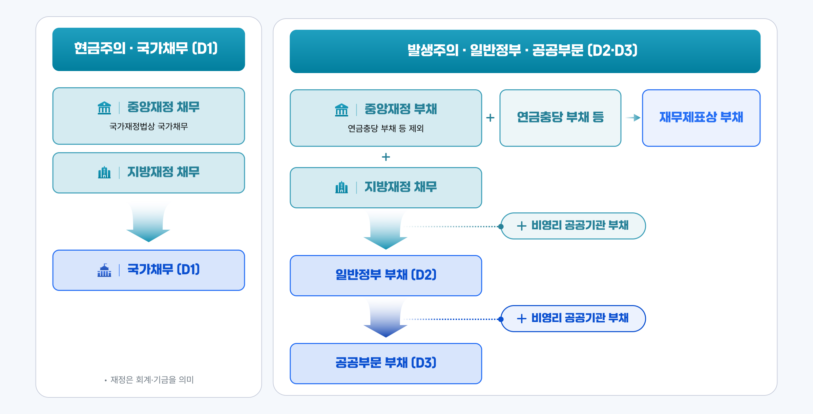

국가채무(D1)
1,127조
GDP대비
46.9%
일반정부부채(D2)
1,127조
GDP대비
50.7%
공공부문부채(D3)
1,673조
GDP대비
69.7%
포괄범위
D1 ⊂ D2 ⊂ D3
좁음 → 넓음
국가채무는 정부가 갚아야 할 빚의 누적액입니다.
재정수지 적자가 쌓이면 국채 발행으로 메우며 늘어나고, 재정준칙은 D1 기준 GDP 대비 60%를 관리선으로 봅니다.
포괄 범위에 따른 3대 부채 통계
국가채무 D1
1,175.0조
GDP 46.0%중앙 · 지방정부 회계 · 기금
중앙·지방정부의 회계와 기금만 포함합니다.
국내 재정 운용의 기준이 됩니다
일반정부부채 D2
1,270.8조
GDP 49.6%D1 + 비영리공공기관
D1에 비영리공공기관을 더합니다.
다른 나라와 비교(IMF·OECD)할 때 씁니다.
공공부문부채 D3
1,175.0조
GDP 67.8%D2 + 비금융공기업
D2에 비금융공기업(한전·LH 등)까지 더합니다.
공공부문 전체 건전성을 점검합니다.
포함 범위가 넓어질수록 금액이 커지므로 순서는 늘 D1 < D2 < D3 입니다. 목적에 맞는 통계를 골라 보면 됩니다.
포괄 범위에 따른 3대 부채 통계

한눈에 정리하는 4가지 부채 지표
우리나라 재정을 관리·계획할 때
국가채무 (D1)
국채 · 차입금 · 국고채무부담행위 등 정부가 갚아야 할 확정 채무
- 포함
- 중앙 + 지방정부 회계·기금
- 기준
- 현금주의 · 국가재정법
- 활용
- 국내 재정운용·관리의 기준
다른 나라와 비교할 때
일반정부부채 (D2)
D1 + 비영리공공기관 부채까지포함
- 포함
- 정부 + 비영리공공기관
- 기준
- 발생주의 · 국제지침(PSDS)
- 활용
- IMF·OECD 국제비교
공기업까지 공공부문 전체를 볼 때
공공부문부채 (D3)
국채 · 차입금 · 국고채무부담행위 등 정부가 갚아야 할 확정 채무
- 포함
- + 비금융공기업
- 기준
- 발생주의 · 국제지침(PSDS)
- 활용
- 공공부문 재정건전성 점검
연금 등 미래 지급 부담까지 볼 때
국가결산 재무제표상 부채
발생주의 회계로 인식한 부채(연금충당부채 등 포함)
- 포함
- 정부 회계·기금 + 공공기관 관리기금
- 기준
- 발생주의(재무제표) · 국가회계법
- 활용
- 미래 지급의무까지 반영한 재무건전성
※ 같은 부채라도 포함 범위·인식 기준에 따라 규모가 다릅니다. 목적에 맞는 지표를 보세요. (정확한 규모는 아래 통계 표 참고)
부채 유형별 통계 현황(단위 : 조원)
테이블영역
D1 · D2 · D3 추이(단위 : 조원)
테이블영역
※ 세 부채 지표가 2020~2024년 모두 늘어나는 흐름을 보여 줍니다. 포함 범위가 넓은 D3일수록 규모가 큽니다.